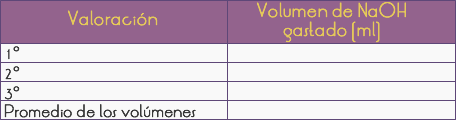
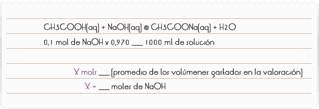

Introducción
El vinagre, muy utilizado en la preparación de carnes y ensaladas, es una solución resultante de la fermentación de algunas bebidas alcohólicas, particularmente del vino. En la fermentación del vino, el alcohol etílico (etanol – CH3CH2CH) es transformado por la acción de microorganismos de la especie Mycoderma aceti, en una mezcla de ácidos carboxílicos, con aproximadamente 4 a 5% de ácido acético y recibe el nombre de vinagre.
El Mycoderderme aceti actúa como catalizador, pues sin su intervención el oxígeno molecular no transforma el alcohol en ácido acético a no ser en cantidades prácticamente nulas.
Objetivo
Determinar la acidez total del vinagre como ácido acético.
1) Montar un sistema para hacer una titulación (Figura 1).
2) Pipetear 1 ml. de vinagre en una matraz Erlenmeyer de 125 ml.
3) Agregar 15 ml. de agua (medidos en una probeta) y 3 gotas de fenolftaleína. Agitar la mezcla.
4) Llenar la bureta con 10 ml. de solución de NaOH 0,1 M.
5) Añadir gota tras gota la solución de la bureta al matraz, moviéndola constantemente (Figura 1),
6) Cerrar la llave de la bureta tan pronto gire el indicador.
7) Anotar en la Tabla 1 el volumen de NaOH gastado en la titulación.
8) Realizar esas operaciones tres veces y anotar en la Tabla 1, la cantidad de volumen de solución de NaOH que se gastó en cada titulación.
Figura 1: Sistema para efectuar una titulación.

Tabla 1: Resultados de la titulación.
RESULTADOS Y CONCLUSIONES
El tenor de ácido acético en el vinagre puede ser determinado a través de la titulación con una solución padrón de NaOH 0,1 M (*fc = 0,970), usando a fenolftaleína como indicador. Durante el proceso reaccionan el ácido acético (CH3COOH) y el hidróxido de sodio (NaOH), produciendo acetato de sodio (CH3COONa) y agua. CH3COOH(aq) + NaOH(aq) CH3COONa(aq) + H2O
Si se considera que toda la acidez del vinagre se debe apenas al ácido acético, puede calcularse la concentración de ácido acético en el vinagre de la forma indicada a seguir.
1) Cantidad de materia de CH3COOH por litro (moles/l)

2) Cantidad de materia de ácido que reacciona con X moles de NaOH:
3) Concentración de la muestra en cantidad de materia de CH3COOH por litro de solución (por litro de vinagre):
4) Gramos de CH3COOH por litro de solución (gr/l)
5) Cálculo del porcentaje del ácido acético en el vinagre:
NOTA: fc = factor de corrección, es un número que expresa la relación entre la concentración real (Cr) de la solución, a través de la titulación y la concentración esperada cuando está preparada la solución (Ce).
El factor de corrección es utilizado para corregir errores cometidos durante la preparación de una solución.